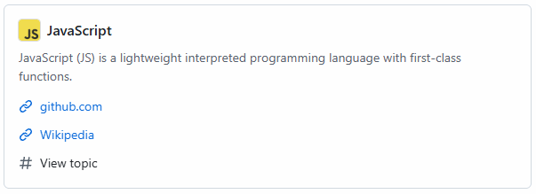
 JavaScript
JavaScript
JavaScript (JS) is a lightweight interpreted programming language with first-class functions.
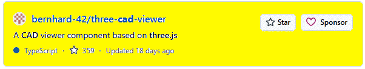
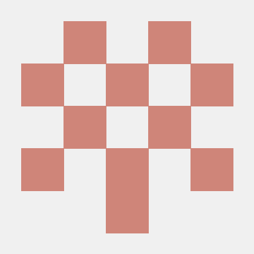
A CAD viewer component based on three.js
✅ Good for: viewing, interacting, organizing CAD models
❌ Bad for: building a CAD editor from scratch
⚠️ Missing: geometry engine (the hardest part)
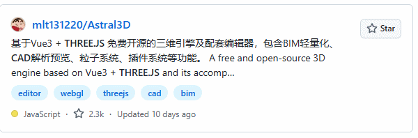
基于Vue3 + THREE.JS 免费开源的三维引擎及配套编辑器，包含BIM轻量化、CAD解析预览、粒子系统、插件系统等功能。 A free and open-source 3D engine based on Vue3 + THREE.JS and its accomp…
Astral3D is:
A production-level web 3D editor framework, not just a library.
And for your goal:
It’s one of the closest open-source starting points you’ll find — but you’ll still need to build the “CAD logic” layer on top.
I can map out exactly how to turn this into your locker design app step-by-step (including what files to modify and what features to build first).
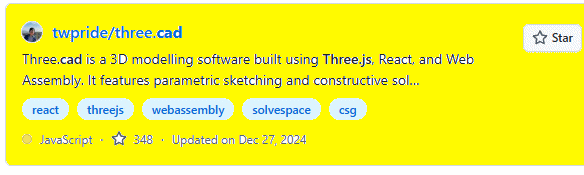
twpride/three.cad Three.cad is a 3D modelling software built using Three.js, React, and Web Assembly. It features parametric sketching and constructive sol…
hree.cad is a computer-aided design (CAD) web app built using three.js, React, and Web Assembly. It features parametric sketching with constraints and 3D modelling with constructive solid geometry (CSG) capabilities. Now this one is a completely different beast than Astral3D — and honestly, it’s much closer to what you said you actually want. My honest recommendation
If your goal is a real product (not a research project):
👉 Start with Astral3D
👉
Add simple parametric
rules
NOT:
👉 Trying to turn
three.cad into a full app
💬 Straight answer
Yes — this is a possible path…
But compared to Astral3D:
three.cad is the deeper, harder, more “correct” path — but also slower and riskier.
🧭 If you want the best outcome
I’d guide you like this:
Phase 1 (fast win)
Astral3D base
-
Hardcoded panel system
Phase 2
Add dimension inputs
-
Add snapping
Phase 3
-
Introduce constraints (inspired by three.cad)
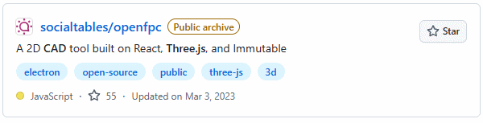
Public archive
A
2D CAD tool
built on React, Three.js,
and Immutable
@socialtables/openfpc - Open Floor Plan Creator
A 2D CAD tool built on React, Three.js, and Immutable. This is an open variant of Social Tables' floor authoring app, repackaged with Electron and invoked from your command line.
It’s an open-source floor plan editor — basically a lightweight 2D CAD system for designing layouts like rooms, buildings, or event spaces.
This repo gives you:
✅ Interaction model (selection,
transform, snapping)
✅ Geometry editing system
✅
Data structure for layouts
✅ UI patterns for CAD
But:
❌ It’s 2D only
❌
No real parametric modeling (like SolidWorks-style constraints)
❌
No manufacturing logic (thickness, joins, etc.)
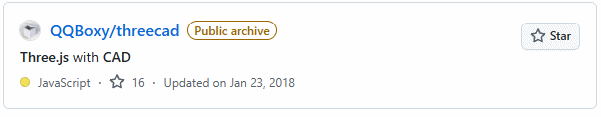
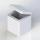
QQBoxy/threecadPublic archive Three.js with CAD
🚀 Why this is a BIG step up from OpenFPC
Your last repo (openfpc)
=
👉 “Draw walls on a floor plan”
This repo =
👉 “Build
actual 3D solids with logic”
Specifically, systems like this support:
2D sketching on planes
Extrusion into 3D solids
Boolean operations (union, subtract, intersect)
Parametric constraints (distance, angles, relationships)
A design tree (history-based modeling like real CAD)
That’s basically:
👉
entry-level SolidWorks / Fusion 360 behavior in the browser
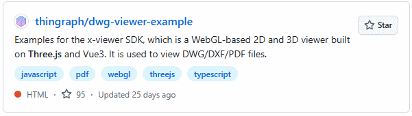
thingraph/dwg-viewer-example Examples for the x-viewer SDK, which is a WebGL-based 2D and 3D viewer built on Three.js and Vue3. It is used to view DWG/DXF/PDF files.
Alright — this one you found is very different again, and it fills a specific missing piece in your overall puzzle.
Critical limitation (this matters)
👉 DWG is NOT directly supported
Must convert
.dwg → .dxffirst using a tool
Also:
👉 It’s read-only visualization
No real editing
No geometry creation
No parametric modeling
🔥 Where this fits in your bigger system
Now let’s connect ALL the repos you’ve found:
1. openfpc
UI / interaction model
2D editing
2. threecad
Parametric modeling ideas
3D geometry logic
3. this repo (thingraph viewer)
Import / viewing of real CAD files
💡 This is the missing piece: IMPORT PIPELINE
Bottom line
This repo is:
✔ Excellent viewer layer
✔ Useful for
file import + visualization
❌ Not useful
for building or editing CAD models
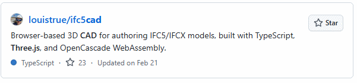
louistrue/ifc5cad Browser-based 3D CAD for authoring IFC5/IFCX models, built with TypeScript, Three.js, and OpenCascade WebAssembly.
Bottom line
👉 Yes, it’s a valuable path — but only later
Right now:
it’s a distraction from your core goal
but a very powerful feature once you have a working system
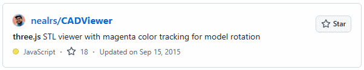
nealrs/CADViewer three.js STL viewer with magenta color tracking for model rotation
Bottom line
👉 Good tool — wrong place in the build order
It’s a late-stage integration feature
Not a foundation
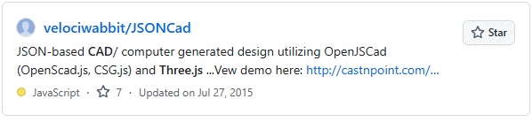
JSON-based CAD/ computer generated design utilizing OpenJSCad (OpenScad.js, CSG.js) and Three.js ...Vew demo here: http://castnpoint.com/…
JSON-based CAD/ computer generated design utilizing OpenJSCad (OpenScad.js, CSG.js) and Three.js
This one is actually very interesting — and very dangerous (for your goals) at the same time.
Where this fits in YOUR system (this is the key insight)
This is NOT your frontend.
This is:
🧠 your backend data model
✅ Use JSONCad philosophy for:
storing designs
defining panels
parametric rules
-
API layer
❌ Do NOT use it as:
your UI
-
your main modeling interface
Bottom line
threecad → how things are built
openfpc → how users interact
-
JSONCad → how designs are stored and defined
👉 That combination = a real product path
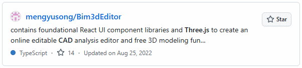
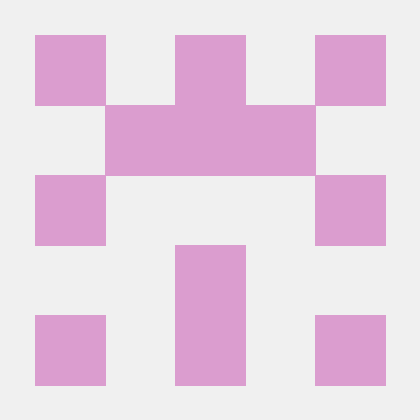
Bim3d Editor
Bim3d Editor contains foundational React UI component libraries and Three.js to create an online editable CAD analysis editor and free 3D modeling function.
Three.js Tis a cross-browser JavaScript library and application programming interface (API) used to create and display animated 3D computer graphics in a web browser using WebGL.
React s a free and open-source front-end JavaScript library for building user interfaces based on UI components.
Material UI is a comprehensive library of components that features our implementation of Google's Material Design system.
Turf.js is a geospatial analysis library, which processes various map algorithms and uses highly readable JavaScript functions to process geojson.
Project preview address: https://mengyusong.github.io/bim3d-editor/
Final verdict (clear and honest)
👉 Yes — this is one of the best repos you’ve found so far to actually start experimenting with
BUT:
don’t depend on it for core CAD logic
don’t expect it to solve parametric modeling
treat it as a framework + reference implementation
🏁 My recommendation (very concrete)
If I were you:
Step 1
Clone this and:
get it running
understand how it handles:
scene
objects
UI
Step 2
Replace its “objects” with:
your own panel system
JSON-defined parts
Step 3
Gradually inject:
constraints
snapping
parametric rules
🔥 Bottom line
This is the first repo you’ve shown that can actually help you build something visible quickly.
👉 Not the engine
👉 But
a very solid starting shell
If you want next step, I can:
👉
map exactly what files/components to study first in this
repo
👉 or show you how to plug your locker logic
into it without rewriting everything
Bottom line
Yes — this is a good starting path, as long as you treat it like:
🧱 a scaffolding to build on
not
🏗 a finished system
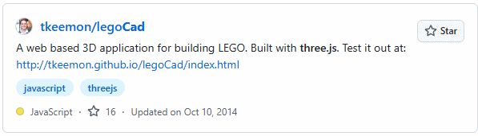
A web based 3D application for building LEGO. Built with three.js. Test it out at: http://tkeemon.github.io/legoCad/index.html
Why it feels “useless” to you
Because your goal is:
🔧 parametric panels, lockers, manufacturing logic
But LEGO CAD systems are built for:
🧱 snapping predefined blocks together
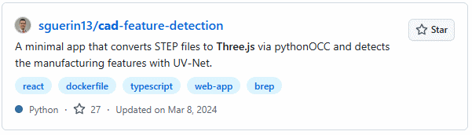
sguerin13/cad-feature-detection A minimal app that converts STEP files to Three.js via pythonOCC and detects the manufacturing features with UV-Net.
👉 This is NOT a path to build your app.
👉
This is a “future superpower” once your app already
exists.
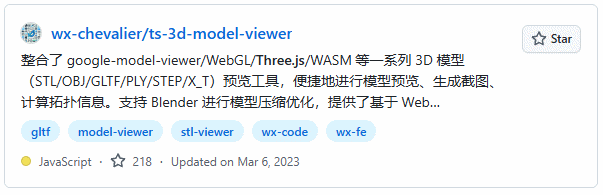
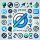
Final verdict
👉 Not useless at
all
👉 But also not a core path
Think of it as:
🔌 “your file viewer / loader module”
NOT:
🧱 “your CAD engine”
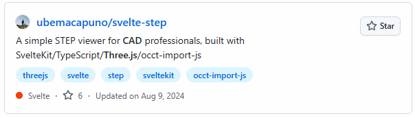
A simple STEP viewer for CAD professionals, built with SvelteKit/TypeScript/Three.js/occt-import-js
Final verdict
👉 Good supporting tool — not a core path
Better than many viewers you found
Clean, modern, useful
But still just:
🔌 “file input + visualization layer”
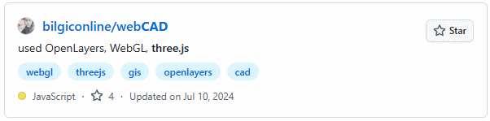
used OpenLayers, WebGL, three.js
👍 YES — worth exploring
good for understanding CAD interactions
good for learning extrusion + selection
good reference for your own implementation
👎 NO — don’t build on it directly
too shallow
not scalable
not robust
🔥 Bottom line
👉 This is a “learn from it, don’t depend on it” repo
And honestly:
You’re now doing something
smart —
you’re starting to separate signal from
noise instead of chasing every GitHub project.
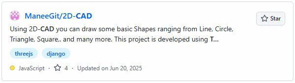
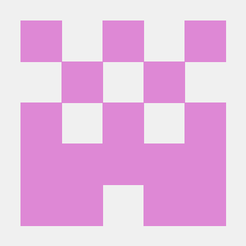
Using 2D-CAD you can draw some basic Shapes ranging from Line, Circle, Triangle, Square,. and many more. This project is developed using T…
2D CAD is a lightweight, open-source 2D Computer-Aided Design (CAD) tool built for rapid prototyping, drawing, and editing 2D geometries. Whether you're an engineer, student, architect, or hobbyist, this project aims to provide an intuitive and robust platform for your 2D design needs.
👉 It’s not a strong candidate for your project direction.
But the real answer is more nuanced than “useless.”
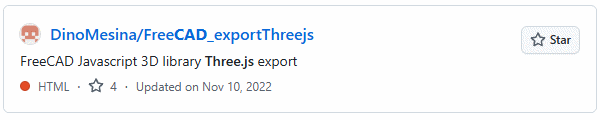
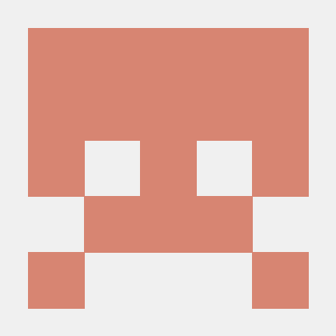
FreeCAD Javascript 3D library Three.js export
This is NOT a CAD system.
It is:
👉 A FreeCAD export script / pipeline that converts FreeCAD models into Three.js-readable geometry
So basically:
Takes a model inside FreeCAD
Extracts geometry
Converts it into a format usable in Three.js web viewers
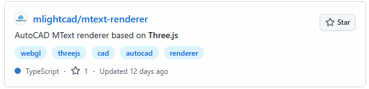
AutoCAD MText renderer based on Three.js
Bottom line
👉 This is a high-quality supporting subsystem, not a CAD engine.
Think of it like:
🏷 “the label printer inside a CAD system”
not:
🏗 “the CAD system itself”
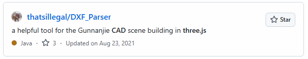
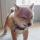
a helpful tool for the Gunnanjie CAD scene building in three.js
What this repo really is
This is a DXF file parser in JavaScript.
Meaning it does one thing:
👉 Takes a .DXF
CAD file (text format)
👉 Converts it into a structured JS
object (lines, arcs, text, layers, etc.)
It belongs to the same family as:
dxf-parser
and similar open-source CAD import tools like
gdsestimating/dxf-parser
Bottom line
👉 This is infrastructure plumbing, not a CAD engine.
Think of it as:
🔌 “translation layer between old CAD files and your system”
not:
🧱 “foundation of your CAD application”
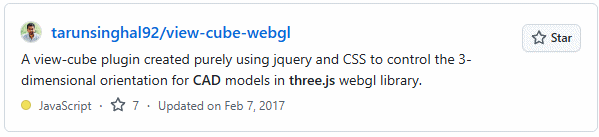
tarunsinghal92/view-cube-webgl
A view-cube plugin created purely using jquery and CSS to control the 3-dimensional orientation for CAD models in three.js webgl library.
Bottom line
👉 This is a learning primitive, not a building block.
Think of it like:
🧱 “how a cube is drawn on screen”
not:
🏗 “how a CAD system is built”
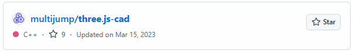
Final verdict
👍 YES — worth exploring
good for UI ideas
good for interaction patterns
good for quick prototyping
👎 NO — not a core path
not scalable
not parametric
not a real CAD engine
🔥 Bottom line
👉 This is a “front-end CAD illusion layer”
It helps with:
how it looks
how it feels
But not:
how it actually works underneath
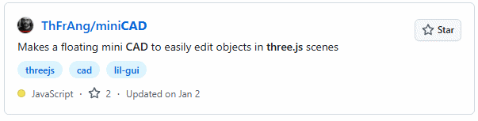
Makes a floating mini CAD to easily edit objects in three.js scenes
Bottom line
👉 Not useless — but very small scope
Think of it as:
🧰 “a screwdriver in your toolbox”
not:
🏗 “the building you’re trying to construct”
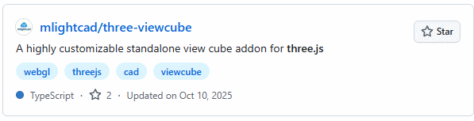
A highly customizable standalone view cube addon for three.js
Bottom line
👉 This is a tiny but legit piece of a real CAD UI
Think of it as:
🧭 “the compass in your app”
not:
🏗 “the structure of your app”
🔥 Where you are now (important)
At this point, you’re not discovering new categories anymore — just smaller and smaller pieces.
That’s your signal:
🚨 Stop collecting repos
✅ Start assembling your system
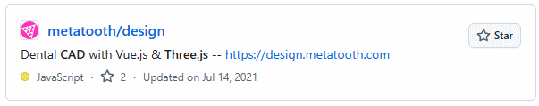
Dental CAD with Vue.js & Three.js -- https://design.metatooth.com
Final verdict
👉 No — there is nothing here you should use right now
Not even as a starting point.
At best:
abstract inspiration (very indirect)
At worst:
distraction that pulls you away from building
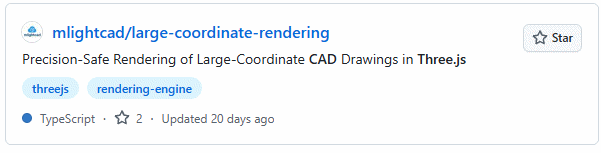
mlightcad/large-coordinate-rendering
Precision-Safe Rendering of Large-Coordinate CAD Drawings in Three.js
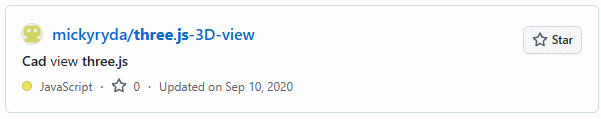
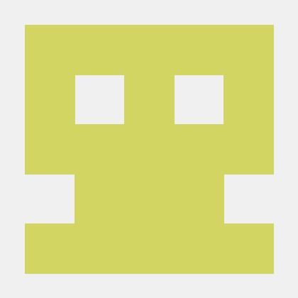
Cad view three.js
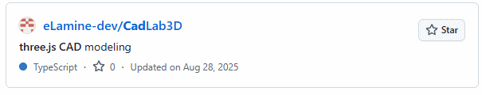
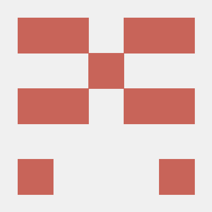
three.js CAD modeling
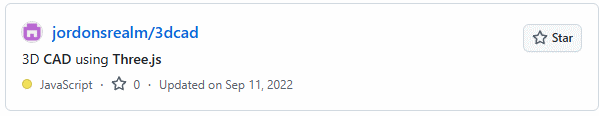
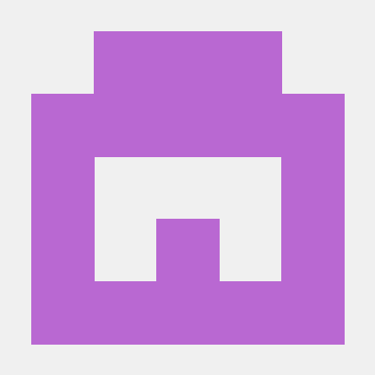
3D CAD using Three.js
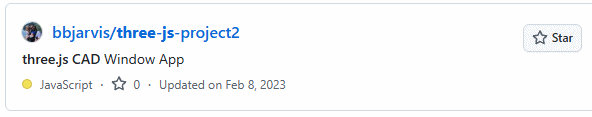
three.js CAD Window App
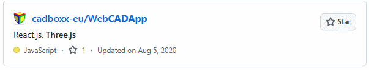
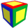
React.js, Three.js
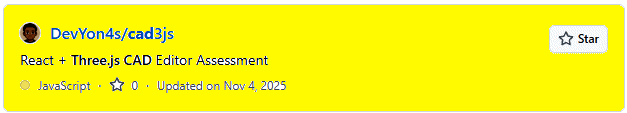
React + Three.js CAD Editor Assessment
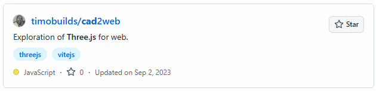
Exploration of Three.js for web.
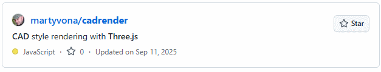
CAD style rendering with Three.js
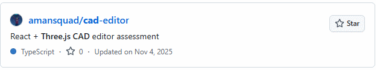
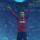
React + Three.js CAD editor assessment
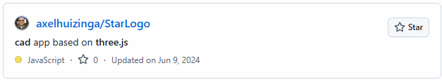
cad app based on three.js
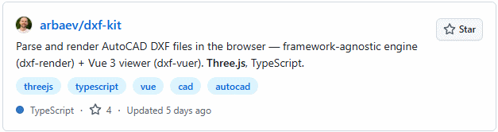
Parse and render AutoCAD DXF files in the browser — framework-agnostic engine (dxf-render) + Vue 3 viewer (dxf-vuer). Three.js, TypeScript.
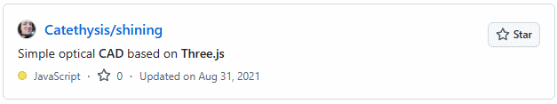
Simple optical CAD based on Three.js
A mini CAD editor using three.js
Missing bitmaps on shapes in three.js
A garden planner CAD program using Three.js
用vue3+ts+three.js+electron实现CAD
Animation 3D réalisée à l'aide de WebGL & Three.JS
Minimal Three.js CAD review tool for STL assemblies.
pesutoaka/three-cad-orientation-fix
How to fix CADs wrong orientation in THREE.js
Cad model viewer on a web page using three.js
A Next.js-powered CAD file viewer with Three.js
Roadinforest/occt-step-viewer-web
A lightweight web-based 3D viewer for STEP files using OCCT and Three.js. Visualize CAD models directly in your browser.
ShredderCAD is a web CAD software based on OpenCascade and Three.js
基于three.js的webCAD及其应用
An expert-novice CAD expertise sharing framework built with three.js
adik2405048/AutoCAD-Apartment-Floor-Plan
I wanted to bridge the gap between generative AI and 3D web graphics. Instead of loading a static model, I built a "Smart Architect" that…
唇釉瓶参数化 CAD 系统 - CadQuery + Vue 3 + Three.js
GestureCAD — A premium CAD design application controlled by hand gestures. MediaPipe + Three.js + FastAPI + OpenCASCADE.
KeisukeHatomi/cad-viewer-experiment
TEP/STP CAD file viewer built with React, Three.js, and occt-import-js
adrianstoot/constructor-metalico
Constructor Metálico Virtual - Aplicación CAD para diseño de estructuras metálicas con Three.js
A browser-based 3D Viewer for CAD Assemblies (originally, the Prusawire 3D Printer), built with Three.js.
A web-based CAD viewer built with Node.js, React, and Three.js — inspired by Ventio.io
Engineering software for 3D design configuration and development of execution documentation in the furniture industry using Three.js
Parametric CAD automation suite — generates STL, DXF, and SVG mechanical engineering outputs from YAML config. Includes Flask + Three.js …
beimnetzewdu/ReactCAD---3D-CAD-Editor
A browser-based 3D CAD editor built with React and plain Three.js, featuring 2D sketching, extrusion, shape manipulation, and full scene …
Browser-based mini CAD inspired by Fusion 360: sketch, offset, extrude, face/edge selection, plus fillet & chamfer using BVH-accelerated …
This Project contains a self-programmed small and basic, browserbased CAD-Application. The application is based on Three.js for visualisa…
legriamax/Advanced-Bim3dEditor
Advanced-Bim3dEditor is a powerful online CAD analysis and 3D modeling tool, using React UI component libraries and Three.js.
tingchu0309-droid/web-based-3d-asset-inspection-tool
Web-based 3D asset inspection tool built with React and Three.js, designed for engineering visualization and system integration workflows.
Web-based parametric CAD editor for custom 3D printed products. Built with Next.js, React, Replicad (OpenCASCADE WASM), and Three.js.
An AI-powered 3D CAD engine that transforms natural language into precise geometry using React, Three.js, and Google Gemini AIi.
An AI-powered 3D CAD engine that transforms natural language into precise geometry using React, Three.js, and Google Gemini Api
📂 View and annotate STEP files in-browser with precise metadata handling using Flask, CadQuery, and Three.js for CAD documentation.
quentinpaden/OGV-meteor-threeR103
Upgrading Three.js to R103, fork from BRL-CAD/OGV-Meteor was auto forking to old master, so this solved the problem
A visual block-based 3D modeling tool. Users drag and drop blocks to create OpenSCAD code, render models in real-time with a Three.js vie…
DXF 2D Scene Viewer & Annotator Project – भूग्रहण (Bhūgrahaṇ) This project provides a powerful and intuitive web-based tool for viewing 2D …
⚡ Browser-based parametric CAD, physics simulation, robotics, and AI-assisted engineering — all in one HTML file. Built with Three.js + W…
A lightweight web-based CAD viewer built with Three.js for inspecting GLB/GLTF models. It provides orbit controls, auto-rotate, wireframe…
mohan668/cad-assembly-web-demo
A demonstration project showcasing how to load, view, and animate CAD assembly files (GLB/GLTF) directly in the web using Three.js. Inclu…
nteractive 3D Industry 4.0 visualizer built with React, Three.js, and Vite. Includes a real-time CAD-style canvas, weather and news inte…
SakharovIvan/ThreeJS_first_project_CADEX_test
CADEX_Web_dev_test_task
IlanAzoulay/ThreeJsExtrudeDrawer
CAD test for Aether GTM: User draws shape on a flat plane, then extrudes at specified height
PurnaJear06/Web-based-CAD-viewer
A web-based application for visualizing 3D models in STL and OBJ formats. Features include interactive model manipulation, multiple view …
NovaVector-Holdings/nova-designer-3d
Professional AI-powered 3D CAD tool for electronics enclosures & parametric designs. Features dual-mode interaction (AI prompts + toolbar…
This project is a browser-based CAD (Computer-Aided Design) prototype built with React, Tailwind CSS, and Three.js, designed to bring 2D …
This is a project to convert the Engineering Model STEP/STP CAD File Data into 3D CAD Model in Angular, Three.Js and display in Web App. …
adityaidev/friday-visual-engine
FRIDAY - generative 3D engineering visualization engine. Turn voice, text, or sketches into interactive holographic mechanical assemblies…
IA2CAD — AI-powered CAD assistant that turns natural language descriptions into 3D mechanical parts. Built with FastAPI, OpenAI GPT-4o-mi…
Export your 3D meshes to .arcad or load .arcad files!! Made for the AR CAD Viewer, but you can use it anyway!
Chili3D是一个基于TypeScript构建的开源、基于浏览器的3D CAD（计算机辅助设计）应用程序。它通过将OpenCascade（OCCT）编译为WebAssembly并与Three.js集成，实现了近乎原生的性能，实现了强大的在线建模、编辑和渲染，所有这些都不需…
j-abhishek26/Change-Management-System
AI-powered Engineering Change Management System that interprets natural language change requests, modifies CAD models via Fusion 360 API,…
Sketchers is a browser-based 2D drawing and editing application built with Three.js + TypeScript. It allows users to draw, edit, select, …
Juanjp1991/lego-builder-python
AI-powered Lego Builder PWA: Generate buildable Lego models from text prompts or images (up to 4), with camera-based brick scanning, inve…
GSP-RenderX is a web-based 3D engine replacing heavy STLs with a custom, compressed GSP format. It uses Edge-Aware Gaussian Splatting to …
shreypanchal170/Furnish-AI-powerd-interiors-
FurnishAI PRO is an advanced AI-assisted 3D full-home interior planning and furniture layout system built using modern web technologies l…
基于 Three.js 和 React 重构的工业级 3D 模型查看器。拥有媲美专业 CAD 软件（如 AutoCAD、SolidWorks）的视口交互体验、高保真 PBR 物理材质渲染，以及布料物理模拟功能。